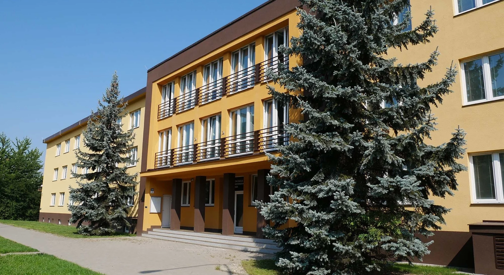
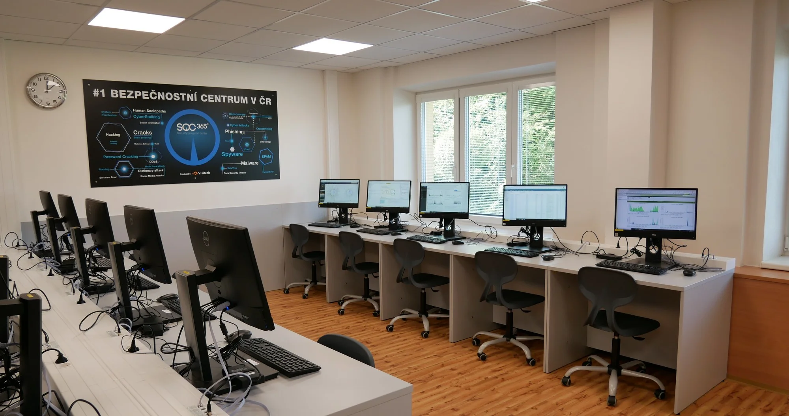
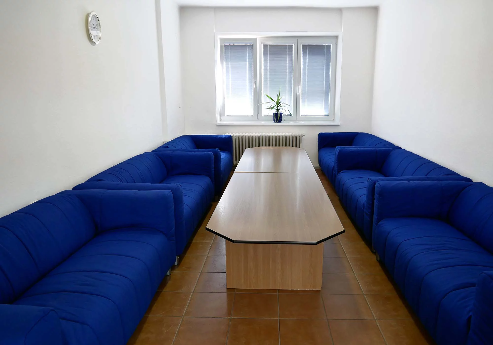
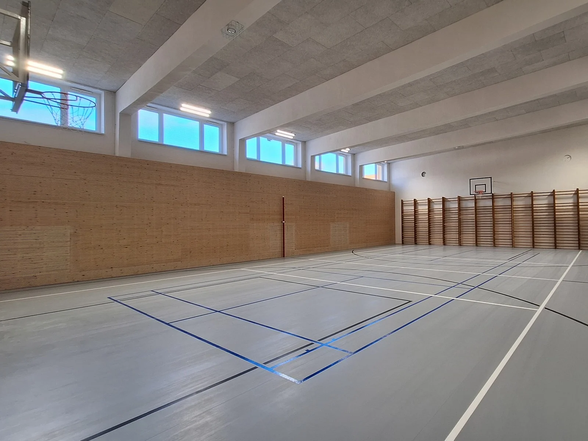
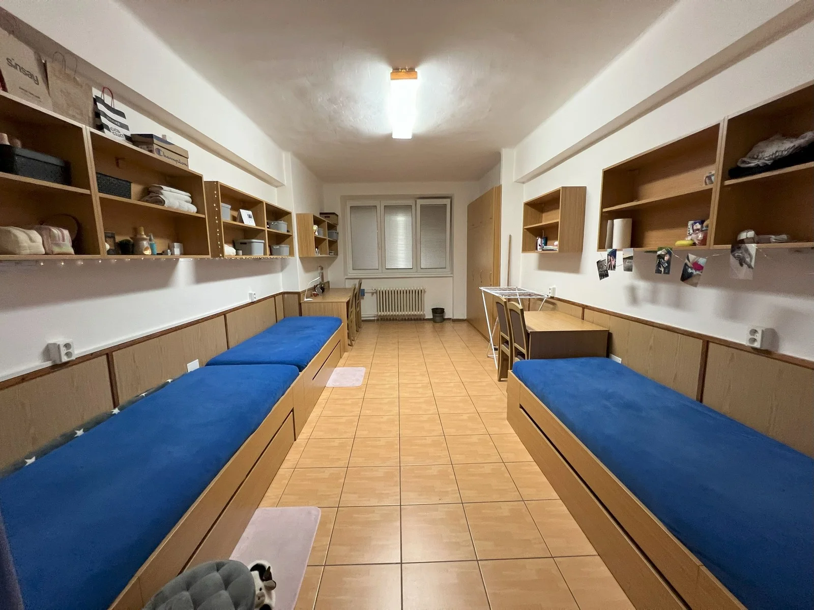
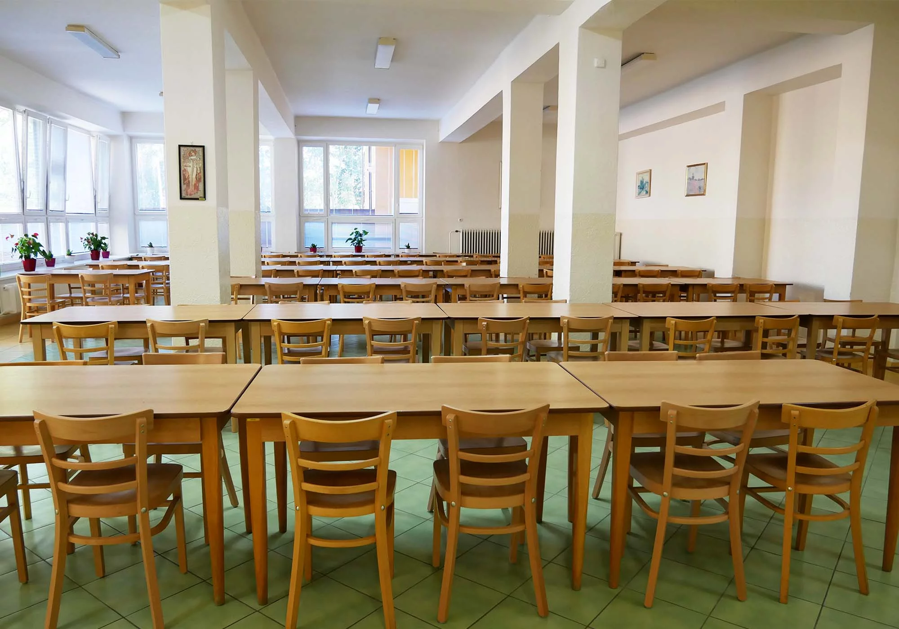

Informační technologie
- Zaměření
- Hardware, operační systémy a počítačová grafika
- Pro koho je obor vhodný
- Pro uchazeče, které zajímá počítač jako celek, od hardwaru přes správu systémů až po vývoj aplikací.
Střední škola teleinformatiky, Ostrava-Poruba
Dva čtyřleté maturitní obory: Informační technologie a Informační a komunikační technologie. Výuka probíhá v odborných učebnách, součástí studia je Cisco akademie.

Odborné učebny, tělocvična, jídelna i domov mládeže.





Oba obory jsou čtyřleté a končí maturitou. Společný základ tvoří programování, tvorba webů a počítačové sítě v Cisco akademii.
Provedeme vás odbornými učebnami a domovem mládeže a odpovíme na dotazy k přijímacímu řízení.
Žáci se mohou zapojit do kurzů, soutěží, školní firmy nebo časopisu. Pro dojíždějící je k dispozici domov mládeže.